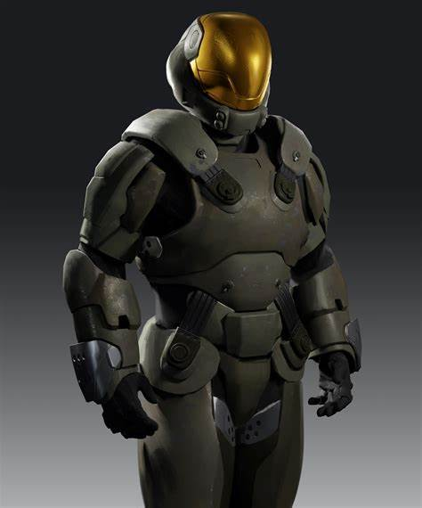

Que no te importe que seas el <¡¡¡el mejor de todos <3!!!> jejeje.

Esto de aquí es la armadura SPI que utilizaban las 3 compañías de Spartans III en su mayoría.
Se caracteriza principlamnente por no poseer ningún tipo de escudos de energía, ni ser tan resistentes como las MJOLNIR, esto debido a que debían de ser baratas y faciles de producir. Pero sí eran más fuertes que la de los ODSTs.
Al menos, los Spartans que tenían estas armaduras eran los Headhunters y los que participaban en la propia compañía misma. Así que sí, estas estuvieron durante la operación TORPEDO y PROMETEO.